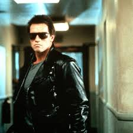
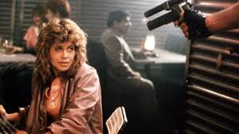

The Terminator
The Terminator is a 1984 American science-fiction action film[6][7][8][9] directed by James Cameron. It stars Arnold Schwarzenegger as the Terminator, a cyborg assassin sent back in time from 2029 to 1984 to kill Sarah Connor (Linda Hamilton), whose son will one day become a savior against machines in a post-apocalyptic future
"The Terminator topped the United States box office for two weeks and helped launch Cameron's film career and solidify Schwarzenegger's career."
In 1984 Los Angeles, a cyborg assassin known as a Terminator arrives from 2029 and steals clothes and guns. Shortly afterward, Kyle Reese, a human soldier sent back in time from the same year, arrives. He steals clothes and weapons and evades the police. The Terminator begins systematically killing women named Sarah Connor, whose addresses it finds in the telephone directory. It tracks the last Sarah Connor to a nightclub, but Kyle rescues her. The pair steal a car and escape with the Terminator pursuing them in a police car.
The Terminator kills Sarah's mother and impersonates her when Sarah, unaware of the Terminator's ability to mimic voices, attempts to contact her via telephone. When they realize it has reacquired them, they escape in a pickup truck while it chases them on a motorcycle. In the ensuing chase, Kyle is wounded by gunfire while throwing pipe bombs at the Terminator. Enraged‚ Sarah knocks the Terminator off its motorcycle but loses control of the truck, which flips over. The Terminator hijacks a tank truck and attempts to run down Sarah, but Kyle slides a pipe bomb onto the tanker's exhaust pipe, causing an explosion that burns the flesh from the Terminator's endoskeleton. It pursues them into a factory, where Kyle activates machinery to confuse the Terminator. He jams his final pipe bomb into the Terminator's abdomen, blowing it apart, injuring Sarah, and killing himself. The Terminator's torso reactivates and grabs Sarah. She breaks free and lures it into a hydraulic press, crushing it.
Here is the terminator
Here is the Sarah Conner
